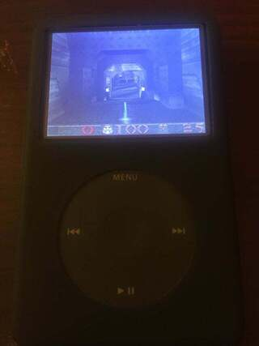

TL;DR: I made Quake run on MP3 players. Read how it happened.
I spent part of this summer playing with two of my favorite things: Rockbox and id Software’s Quake. I even got the chance to combine the two by porting Quake to run on Rockbox! What more could I ask?
This post is my story of how it went down. It is a protracted one, dragging on for nearly two years. It is also my first attempt at documenting the development proess in long form and “in the raw,” as opposed to the finished technical documentation I’ve written way too much of – do bear with me. There will be technical details, but I will try to focus on the thought process behind the code.
Alas, the time has come to bid Rockbox and Quake goodbye, at least for the near term. My free time will be preciously scarce in the coming months, so I’m trying to get this brain dump in before the deluge.
Rockbox is a fun open-source project I spend far too much time hacking on. The web page explains it best: “Rockbox is a free replacement firmware for digital music players.” That’s right, we provide a complete replacement for the manufacturer’s software that came on your Sandisk Sansa, Apple iPod, or any of a wide array of other supported targets.
Not only do we aim to replicate the original firmware’s functionality, we support loadable extensions called plugins – small programs to run on your MP3 player. Rockbox already has a bunch of nifty games and demos, the most impressive of which were probably the first-person shooters Doom and Duke Nukem 3D. But I still felt there was something missing.
Quake is a fully 3D first-person shooter. Let’s break that down. They key words there are fully 3D, as opposed to Doom and Duke Nukem 3D, both of which are usually considered 2.5D – imagine a 2D map with an additional height component. Quake, on the other hand, is fully 3D. Every vertex and polygon exists in 3-space. What this means is that the old pseudo-3D tricks no longer work – performance will suffer. Anyhow, I digress. In short, Quake is the Real Deal™.
Quake is no joke, either. Some research showed that Quake “requires” a ~100 MHz x86 with a FPU and ~32 MB of RAM. Before you chuckle, keep in mind that Rockbox’s targets are probably nothing close to what John Carmack had in mind when writing the game – Rockbox runs on devices with CPUs as slow as 11MHz and as little as 2 MB of RAM (of course, Quake wasn’t going to be running on those devices). With this in mind, I looked at my ever-shrinking DAP collection and picked out the most powerful surviving member: an Apple iPod Classic/6G, with a 216 MHz ARMv5E and 64 MB of DRAM. Nothing to sneeze at, but certainly marginal when it comes to running Quake.
There exists a wonderful version of Quake which runs on SDL. It is called, unsurprisingly, SDLQuake. Thankfully, I already ported the SDL library to Rockbox (that’s for another article), so getting Quake to compile was rather straightforward, if not the most glorious work: copy over the source tree; make; fix errors; rinse; repeat. I’m probably glossing over a lot of minutiae here – but just imagine my excitement when I eventually got a successfully compiling and linking Quake executable. I was ecstatic.
Let’s load her up! I thought.
And it booted! The beautiful Quake console background greeted me, as did the menu. All good. But not so fast! When I started a game, something wasn’t right. The “Introduction” level seemed to load fine, but the spawn position was completely outside the map. Strange, I thought. I poked and prodded, debugged and splashf’d, but to no avail – the bug was too hard for me, or so it felt.
And so it remained, for years. I should probably give a little timing information at this point. This first attempt at Quake took place in September 2017, after which I gave up. My Quake-Rockbox abomination sat on a shelf, collecting dust, until July 2019. By just the right combination of boredom and motivation, I resolved to finish what I had started.
I got to debugging. Now, my flow state is such that I remember virtually no details of what exactly I did, but I’ll try my best here to reconstruct.
As I discovered, the structure of Quake is divided into two main parts: the engine code, in C; and the high-level game logic, in QuakeC, a bytecode-compiled language. Now, I had always stayed away from the QuakeC VM due to some weird fear of debugging other people’s code. But now it forced me to delve in. Here again I vaguely recall a mad flow session in which I sought out the root of the bug. After what must’ve been a whirlwind of greps, I found my culprit: pr_cmds.c:PF_setorigin. This function takes a 3-vector specifying the player’s new coordinates when starting a map, which, for some reason, was always (0, 0, 0). Hmm…
I traced the data flow back and found where it originated – a call to Q_atof() – the classic string to float converter. And then it dawned on me: I had provided a set of wrapper functions, which overrode Quake’s Q_atof() – and my atof() function must’ve been broken. Fixing it was straightforward. I replaced the flawed atof with a correct one. Et voila! The glorious three-passage introduction level loaded flawlessly, and “E1M1: The Slipgate Complex” loaded fine too. The sound output still sounded like a 2-cycle lawnmower, but hey – I’d gotten Quake to boot on an MP3 player!
This project finally gave me an excuse to do something I’d been putting off for a while: learn ARM assembly language. The application was in a performance-sensitive sound mixing loop in snd_mix.c. A SND_PaintChannelFrom8 function took an array of 8-bit mono sound samples and produced a 16-bit stereo stream, with left and right channels scaled independently. Here’s the assembly version I churned out after a couple hours (C version follows):
SND_PaintChannelFrom8:
// r0: int true_lvol
// r1: int true_rvol
// r2: char *sfx
// r3: int count
stmfd sp!, {r4, r5, r6, r7, r8, sl}
ldr ip, =paintbuffer
ldr ip, [ip]
mov r0, r0, asl #16 // pre-scale both volumes by 2^16
mov r1, r1, asl #16
sub r3, r3, #1 // we'll count backwards
// sl = 0xffff0000
ldrh sl, =0xffff
.loop:
ldrsb r4, [r2, r3] // load *sfx[i] -> r4
// keep endianness in mind here
// buffer looks like [left_0, left_1, right_0, right_1] in memory
// but it is loaded as [right1, right0, left1, left0] to registers
ldr r8, [ip, r3, lsl #2] // load paintbuffer[0:1] = RIGHTCHANNEL:LEFTCHANNEL
// handle high half (right channel) first
mul r5, r4, r1 // SCALEDRIGHT = SFXI * (true_rvol << 16) -- bottom half is zero
// r7 holds right channel in high half (dirty bottom half)
qadd r7, r5, r8 // RIGHTCHANORIG = SCALEDRIGHT + RIGHTCHANORIG (high half)
bic r7, r7, sl // zero bottom bits of r7
// trash r5, r6 and handle left channel
mul r5, r4, r0 // SCALEDLEFT = SFXI * (true_rvol << 16)
mov r8, r8, lsl #16 // extract original left channel from paintbuffer
// r8 holds left channel in high half with zero bottom half
qadd r8, r5, r8
// combine the two 16-bit samples in r7 as 32-bit [left:right]
// (use lsr to not sign-extend the lower half)
orr r7, r7, r8, lsr #16
str r7, [ip, r3, lsl #2] // write 32-bit to paintbuffer
subs r3, r3, #1
bgt .loop // must use instead of bne because of the corner case count=1
ldmfd sp!, {r4, r5, r6, r7, r8, sl}
bx lrThere’s some hackery going on here. I’m using the ARM DSP qadd instruction to get saturation addition for cheap, but qadd only works with 32-bit words, and the sound samples are 16 bits. The hack, then, is to first shift the samples left by 16; qadd the samples; and shift them back. This accomplishes in one instruction what GCC took seven to do.
The C version is below for reference:
void SND_PaintChannelFrom8 (int true_lvol, int true_rvol, signed char *sfx, int count)
{
int data;
int i;
// we have 8-bit sound in sfx[], which we want to scale to
// 16bit and take the volume into account
for (i=0 ; i<count ; i++)
{
// We could use the QADD16 instruction on ARMv6+
// or just 32-bit QADD with pre-shifted arguments
data = sfx[i];
paintbuffer[2*i+0] = CLAMPADD(paintbuffer[2*i+0], data * true_lvol); // need saturation
paintbuffer[2*i+1] = CLAMPADD(paintbuffer[2*i+1], data * true_rvol);
}
}I calculated about a 60% improvement in instructions/cycle over the optimized C version. Most of the saved cycles come from using qadd and packing two 16-bit samples in a 32-bit read and write.
You’ll notice the assembly listing has a comment by the bgt instruction (branch if greater than) noting that bne (branch if not equal) cannot be used because of a corner case that freezes if the sample count is 1. This will lead to an integer wraparound to 0xFFFFFFFF and an extremely long delay (that will eventually resolve itself).
This corner case was triggered by one sound in particular, of 7325 samples in length (the sound triggered by a 100 health pickup). What’s so special about 7325, you ask? Try taking it modulo any power of two:
7325 % 2 = 1
7325 % 4 = 1
7325 % 8 = 5
7325 % 16 = 13
7325 % 32 = 29
7325 % 64 = 29
7325 % 128 = 29
7325 % 256 = 157
7325 % 512 = 157
7325 % 1024 = 157
7325 % 2048 = 1181
7325 % 4096 = 3229Notice anything? That’s right – by some coincidence, 7325 prime whenever taken modulo a power of two. This leads to the sound mixing code being passed a one-sample array, causing the freeze.
I spent at least a day rooting out this bug, only to find that it all came down to one wrong instruction. Life is like that sometimes, isn’t it?
I’ve omitted a couple interesting things here for the sake of space. There is, for example, the race condition that occured only when gibbing a zombie. Or the assorted alignment issues and the micro-optimizations for rendering. But those are for another time. For now, it is time to say goodbye to Quake – it’s been good to me.